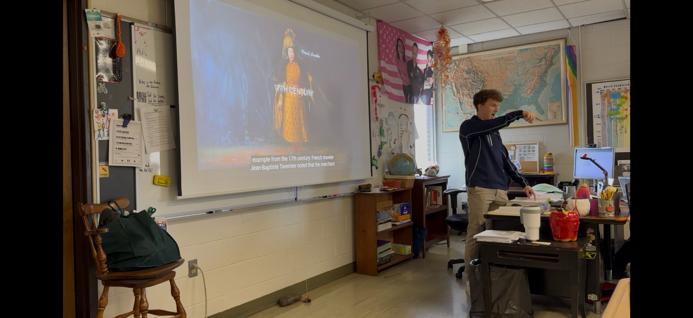

Whenever I get the opportunity to lead a group discussion, the number one goal I have is to try to make every child who participates feel heard and appreciated. Making sure students feel comfortable and willing to share is pivotal when leading a class discussion. This artifact, in particular, was taken from a group discussion I was starting on the caste system in Ancient India. As a class, it was their job to relate different sections of the caste system to modern-day occupations. As the students went through each section, it was my job to make sure that the students were being respectful of current occupations, backing up their claims with information they found, and respecting each other. Finally, as a class, we discussed where we think teachers might fit into the modern-day caste system and why. While leading a group discussion, it is important as an educator to keep students engaged and interested in the topic while also steering the conversation to the appropriate topics.